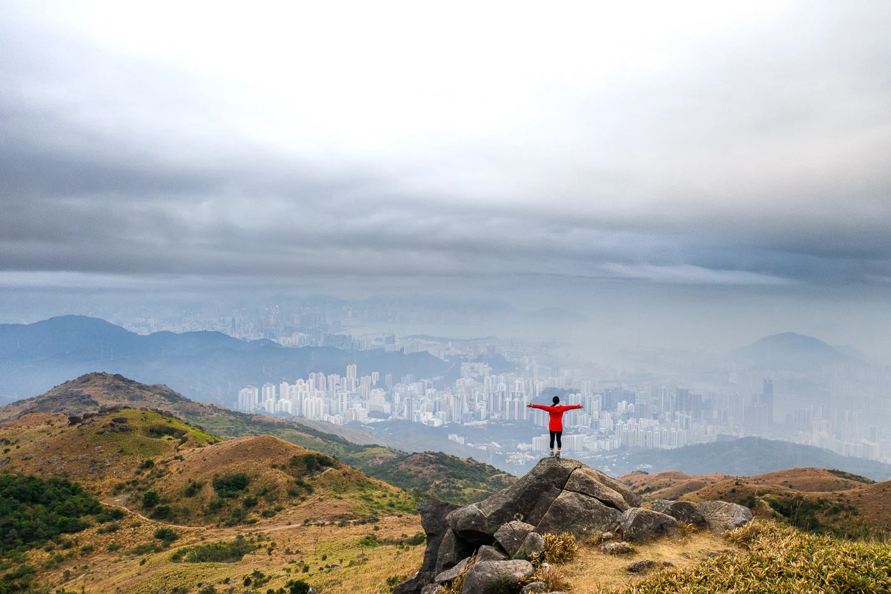
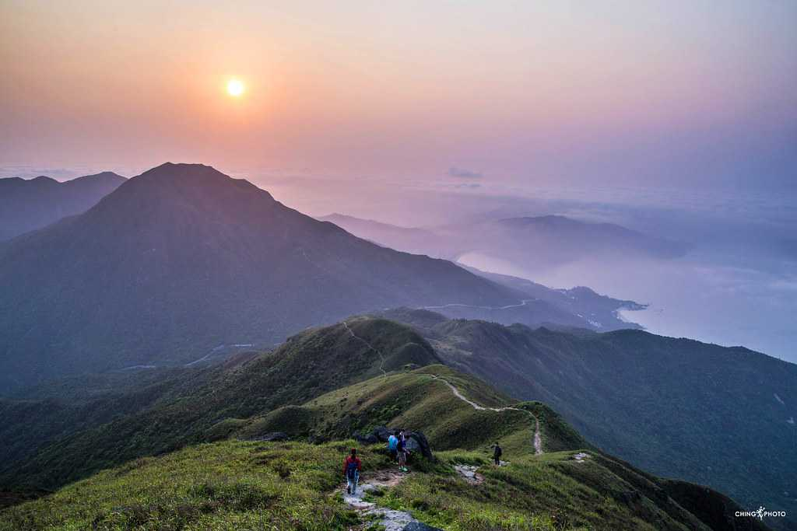
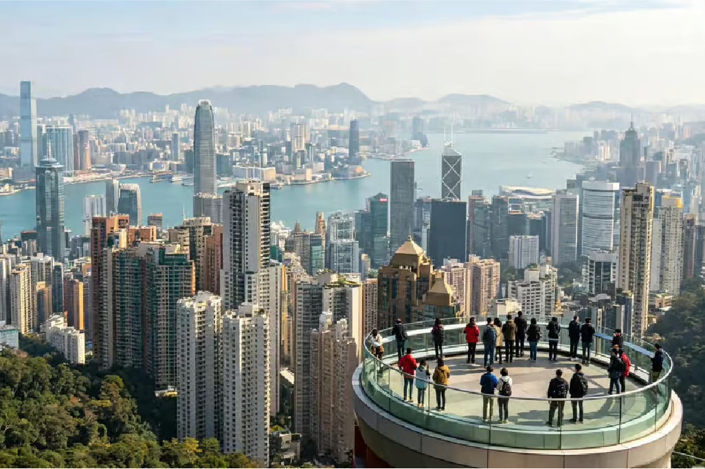

這些山脈環繞著香港的地形。
These Mountains surround Hong Kong's terrain
香港位於珠江口東側，北接廣東省深圳市，面向南海。
Hong Kong is situated on the eastern edge of The Pearl River estuary, bordered by Shenzhen, the Guangdong province, in the north, and facing the South China Sea.

大東山
Sunset Peak
這是香港第三高峰，位於大嶼山，海拔869公尺（2,851英尺）。
This is Hong Kong's third-highest peak, standing at 869 meters (2,851 feet) on Lantau Island.

大帽山
Tai Mo Shan
這是香港的最高峰，海拔957公尺（3140英尺），位於新界中部。
This is the highest peak in Hong Kong, standing at 957 metres (3,140 feet) above sea level in the centre of the New Territories.

鳳凰山
Lantau Peak
這是香港第二高峰，位於大嶼山，海拔934公尺（3,064英尺，以香港主水平基準面為準）。
This is Hong Kong's second-highest mountain summit, standing at 934 meters (3,064 feet) above the Hong Kong Principal Datum on Lantau Island.

太平山
Victoria Peak
這是香港島上海拔最高的山峰，高552公尺（1,811英尺）。它是一處首屈一指的旅遊地標，可在此飽覽中環、維多利亞港及週邊島嶼的全景。
This is the highest hill on Hong Kong Island, standing at 552 metres (1,811 feet). It is a premier tourist landmark offering panoramic views of Central, Victoria Harbour, and the surrounding islands.

馬鞍山
Ma On Shan
這是一座位於香港新界吐露港以東、呈馬鞍狀的山峰。其海拔高度為702公尺（2,303英尺），位居香港十大高峰之一。該山橫跨沙田區與大埔區。
This is a saddle-shaped peak in east of Tolo Harbour in the New Territories of Hong Kong. With a height of 702 metres (2,303 ft), it stands among the ten highest mountains in Hong Kong. The mountain borders Sha Tin and Tai Po districts.

獅子山
Lion Rock
獅子山是香港一座海拔495公尺（1624英尺）的著名山峰，位於九龍與新界交界處；因從東九龍望去，其外形酷似一頭俯臥的獅子，故而得名。
Lion Rock is a famous 495-meter-high (1,624 ft) mountain in Hong Kong that sits on the border between Kowloon and the New Territories, named for its distinctive shape that resembles a crouching lion when viewed from East Kowloon.